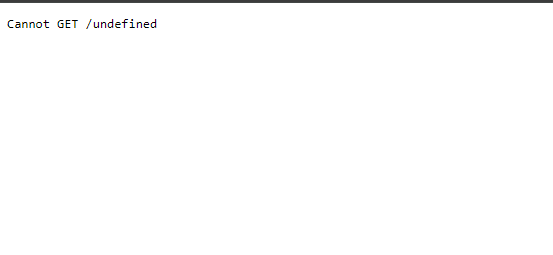
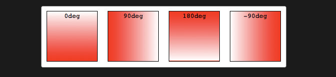
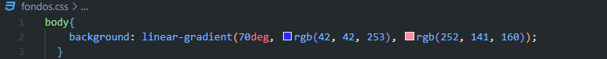
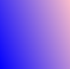
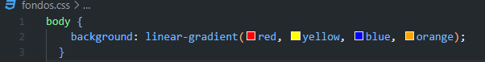
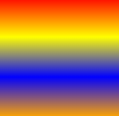
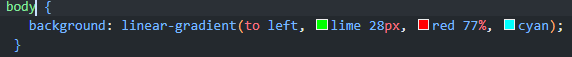
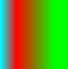

Cansado del fondo blanco,bueno tenemos una solucion para ti 😁

Muy bien,aqui esta las indicacion de las dirrecion para tu fondo

Aqui esta el ejemplo de muchos que puedes crear
 
Otro estilo que te puede gustar ,recuerda que puedes cambiar los colores por si no te gustan
 
Un estilo que tiene los colores un poco invertido en 90deg
 